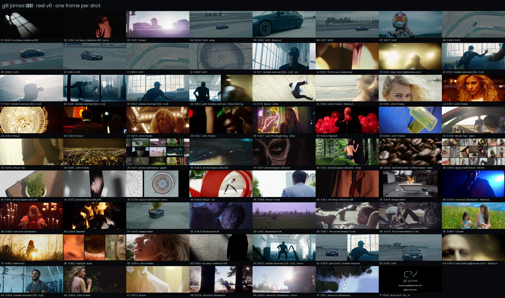

68 s · 71 shots · built on the projects Gill's own reels lead with · cut to lost coffee, "to go" (re-edited draft audio)
download the video · full shot list, ranking and notes
| A cold open 0:00–0:06 | Arc'teryx window light → orange jacket → Braun flare → BMW drift ramps into the first hit |
| B brand 0:06–0:18 | BMW Drift block → tyre-circle iris → AXE / 19 Crimes / Stay Gold boxers → AXE split screen |
| C light 0:18–0:27 | John Frieda hair and gold, Braun chandelier, BONSAI neon, Allan Rayman, Shock Top |
| D photo 0:27–0:33 | ᑕᐣᓯ matte dives into the photo wall → into one photograph → singles |
| E object + space 0:33–0:40 | A&W beans shrink into the joio.co object wall → dive → spatial boards |
| F story + peak 0:40–0:59 | through the red ring → fire chain → Backward Fall, Yara, Claritin → eyes → stutter → BMW out of the smoke |
| G release 0:59–1:08 | Verona's snow forest → circle closes on the end card |
